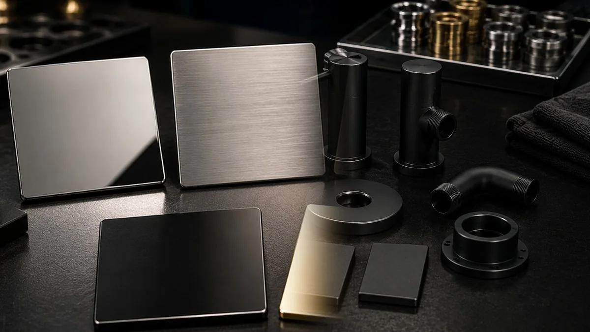

۱. زیرکار چیست؟
فلز/آلیاژ، پوشش قبلی، وضعیت سطح و هندسه را مشخص کنید.
محیط، رطوبت، سایش، تماس شیمیایی و دما را بهعنوان ورودی انتخاب فرآیند ثبت کنید؛ هر مسیر باید با معیار واقعی پروژه سنجیده شود.
اگر ظاهر و رنگ اولویت دارد PVD ارزش بررسی دارد؛ اگر معیار عملکردی خاصی دارید، ابتدا همان معیار و روش آزمون را تعریف کنید.
نوع فلز، آلیاژ و آمادهسازی سطح روی نتیجه نهایی تأثیر مستقیم دارد.

انتخاب درست وقتی آسانتر میشود که ابتدا زیرکار، هدف، معیار پذیرش و نیاز به نمونه را مشخص کنید.
فلز/آلیاژ، پوشش قبلی، وضعیت سطح و هندسه را مشخص کنید.
ظاهر، براقیت/بافت، سایش، خوردگی یا صرفاً آمادهسازی سطح؟
مرجع رنگ، سطح قابلدید، تلرانس یا آزمونی که تصمیم را میبندد.
برای رنگ حساس، زیرکار نامعمول یا ریسک عملکردی، قبل از تیراژ نمونه را ارزیابی کنید.
اگر وقت ندارید، از این سه مسیر شروع کنید.